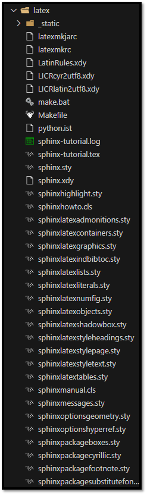
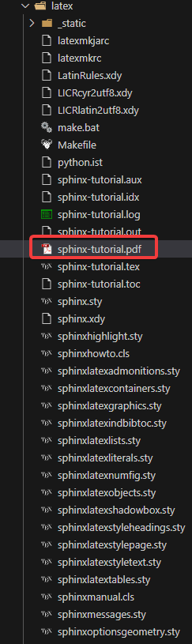

Generación de PDF a partir de la documentación
Generar un documento PDF a partir de tu documentación es una funcionalidad poderosa que ofrece Sphinx gracias a su integración con LaTeX. Sin embargo, este proceso requiere una configuración adecuada y algunas dependencias instaladas previamente.
Requisitos previos
Antes de generar archivos PDF, asegúrate de cumplir con los siguientes requisitos:
Instalar LaTeX:
En Windows: Descarga e instala MiKTeX desde https://miktex.org/download.
En Linux: Instala
TeX Livecon:sudo apt install texlive-latex-base texlive-fonts-recommended texlive-latex-extra
En macOS: Instala MacTeX desde https://tug.org/mactex/.
Verificar la instalación:
Abre una terminal y verifica quepdflatexestá disponible:pdflatex --versionDeberías ver información sobre la versión instalada.
Paquetes adicionales de LaTeX:
Es posible que necesites algunos paquetes adicionales. Puedes instalarlos manualmente o permitir que MiKTeX los descargue automáticamente cuando sea necesario.
Configurar el archivo conf.py
Abre el archivo conf.py y asegúrate de tener la siguiente configuración para LaTeX:
# Usar pdflatex como motor de compilación
latex_engine = 'pdflatex'
# Configurar opciones para el documento PDF
latex_elements = {
'papersize': 'a4paper', # Tamaño del papel
'pointsize': '10pt', # Tamaño de fuente principal
'preamble': r'\usepackage[utf8]{inputenc}', # Codificación de entrada
'figure_align': 'htbp' # Alineación de figuras
}
# Documentos PDF a generar
latex_documents = [
('index', 'documento.tex', 'Título del Documento',
'Autor del Documento', 'manual'),
]
Explicación de las opciones clave:
papersize: Define el tamaño de la página (a4paperoletterpaper).pointsize: Tamaño de la fuente en puntos (10pt,11pt,12pt).preamble: Permite agregar configuraciones adicionales de LaTeX.figure_align: Controla la alineación de las figuras.
Generar archivos LaTeX
En la terminal, dirígete a la carpeta raíz donde se encuentra el archivo make.bat (en Windows) o Makefile (en Linux/macOS).
Windows:
make.bat latex
Linux/macOS:
make latex
Resultado esperado:
Esto generará una carpeta build/latex con varios archivos, incluyendo un archivo .tex.
📸 Ejemplo de resultado:

Compilar el archivo .tex a PDF
Dirígete a la carpeta build/latex y compila el archivo .tex:
pdflatex documento.tex
Si aparece un diálogo de instalación de paquetes (en MiKTeX), selecciona un servidor local (por ejemplo, España) y permite la instalación de los paquetes requeridos.
Es posible que necesites ejecutar el comando varias veces para generar correctamente el índice y las referencias cruzadas.
Resultado esperado:
Al finalizar, verás un archivo documento.pdf en la misma carpeta.
Ejemplo de resultado final:

Verificar y revisar el PDF
Abre el archivo PDF con tu lector de PDF preferido y verifica que:
La tabla de contenidos esté correctamente generada.
Las imágenes y tablas estén alineadas adecuadamente.
Las referencias cruzadas y enlaces funcionen correctamente.
Solución de problemas comunes
Error: Paquete LaTeX faltante
Si ves mensajes de error sobre paquetes faltantes, instala los paquetes manualmente o permite que MiKTeX los descargue automáticamente.
Error de codificación UTF-8
Agrega esta línea en
conf.pydentro delatex_elements:'preamble': r'\usepackage[utf8]{inputenc}'
Error de compilación en tablas o figuras
Asegúrate de que las tablas y figuras estén bien formateadas y no excedan los márgenes de la página.